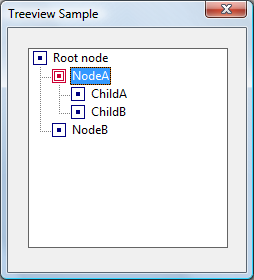
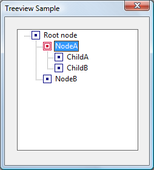
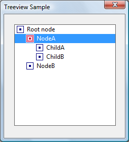

A tree-view control is a window that displays a hierarchical list of items, such as the headings in a document, the entries in an index, or the files and directories on a disk. Each item consists of a label and an optional bitmapped image, and each item can have a list of subitems associated with it. By clicking an item, the user can expand or collapse the associated list of subitems.
The following illustration shows a simple tree-view control with a root node, an expanded node, and a collapsed node. The control uses one bitmap for the selected item and another bitmap for other items.
After creating a tree-view control, you add, remove, arrange, or otherwise manipulate items by sending messages to the control. Each message has one or more corresponding macros that you can use instead of sending the message explicitly.
The following topics are discussed in this section.
Tree-view styles govern aspects of a tree-view control's appearance. You set the initial styles when you create the tree-view control. You can retrieve and change the styles after creating the tree-view control by using the GetWindowLong and SetWindowLong functions.
The TVS_HASLINES style enhances the graphic representation of a tree-view control's hierarchy by drawing lines that link child items to their parent item, as shown in the following illustration.

By itself, this style does not draw lines at the root of the hierarchy. To do so, you need to combine the TVS_HASLINES and TVS_LINESATROOT styles. The result is shown in the following illustration.

The user can expand or collapse a parent item's list of child items by double-clicking the parent item. A tree-view control that has the TVS_HASBUTTONS style adds a button to the left side of each parent item. The user can click the button once instead of double-clicking the parent item to expand or collapse the child. TVS_HASBUTTONS does not add buttons to items at the root of the hierarchy. To do so, you must combine TVS_HASLINES, TVS_LINESATROOT, and TVS_HASBUTTONS. This combination of styles is shown in the following illustration.
The TVS_CHECKBOXES style creates checkboxes next to each item. If you want to use the checkbox style, you must set the TVS_CHECKBOXES style (with SetWindowLong) after you create the tree-view control and before you populate the tree. Otherwise, the checkboxes might appear unchecked, depending on timing issues. The following illustration shows the checkbox style.

The TVS_FULLROWSELECT style causes the selection highlight to extend over the full width of the control, not just over the item itself. The following illustration shows this style.

The TVS_EDITLABELS style makes it possible for the user to edit the labels of tree-view items. For more information about editing labels, see Tree-View Label Editing.
For more information on these and other styles, see Tree-View Control Window Styles.
Any item in a tree-view control can have a list of subitems—called child items—associated with it. An item that has one or more child items is called a parent item. A child item is displayed below its parent item and is indented to indicate that it is subordinate to the parent. An item that has no parent appears at the top of the hierarchy and is called a root item.
To add an item to a tree-view control, send the TVM_INSERTITEM message to the control. The message returns a handle to the HTREEITEM type, which uniquely identifies the item. When adding an item, you must specify the handle to the new item's parent item. If you specify NULL or the TVI_ROOT value instead of a parent item handle in the TVINSERTSTRUCT structure, the item is added as a root item.
At any given time, the state of a parent item's list of child items can be either expanded or collapsed. When the state is expanded, the child items are displayed below the parent item. When it is collapsed, the child items are not displayed. The list automatically toggles between the expanded and collapsed states when the user double-clicks the parent item or, if the parent has the TVS_HASBUTTONS style, when the user clicks the button associated with the parent item. An application can expand or collapse the child items by using the TVM_EXPAND message.
A tree-view control sends the parent window a TVN_ITEMEXPANDING notification message when a parent item's list of child items is about to be expanded or collapsed. The notification gives an application the opportunity to prevent the change or to set any attributes of the parent item that depend on the state of the list of child items. After changing the state of the list, the tree-view control sends the parent window a TVN_ITEMEXPANDED notification message.
When a list of child items is expanded, it is indented relative to the parent item. You can set the amount of indentation by using the TVM_SETINDENT message or retrieve the current amount by using the TVM_GETINDENT message.
A tree-view control uses memory allocated from the heap of the process that creates the tree-view control. The maximum number of items in a tree view is based on the amount of memory available in the heap.
You typically specify the text of an item's label when adding the item to the tree-view control. The TVM_INSERTITEM message includes a TVITEM structure that defines the item's properties, including a string containing the text of the label.
A tree-view control allocates memory for storing each item; the text of the item labels takes up a significant portion of this memory. If your application maintains a copy of the strings in the tree-view control, you can decrease the memory requirements of the control by specifying the LPSTR_TEXTCALLBACK value in the pszText member of TVITEM instead of passing actual strings to the tree view. Using LPSTR_TEXTCALLBACK causes the tree-view control to retrieve the text of an item's label from the parent window whenever the item needs to be redrawn. To retrieve the text, the tree-view control sends a TVN_GETDISPINFO notification message, which includes the address of an NMTVDISPINFO structure. The parent window must fill the appropriate members of the included structure.
The user can directly edit the labels of items in a tree-view control that has the TVS_EDITLABELS style. The user begins editing by clicking the label of the item that has the focus. An application begins editing by using the TVM_EDITLABEL message. The tree-view control notifies the parent window when editing begins and when it is canceled or completed. When editing is completed, the parent window is responsible for updating the item's label, if appropriate.
When label editing begins, a tree-view control sends its parent window a TVN_BEGINLABELEDIT notification message. By processing this notification, an application can allow editing of some labels and prevent editing of others. Returning zero allows editing, and returning nonzero prevents it.
When label editing is canceled or completed, a tree-view control sends its parent window a TVN_ENDLABELEDIT notification message. The lParam parameter is the address of an NMTVDISPINFO structure. The item parameter is a TVITEM structure that identifies the item and includes the edited text. The parent window is responsible for updating the item's label if it wishes to keep the new label. The pszText member of TVITEM is zero if editing is canceled.
During label editing, typically in response to the TVN_BEGINLABELEDIT notification message, you can retrieve the handle to the edit control used for label editing by using the TVM_GETEDITCONTROL message. You can send the edit control an EM_SETLIMITTEXT message to limit the amount of text a user can enter or subclass the edit control to intercept and discard invalid characters. Note, however, that the edit control is displayed only after TVN_BEGINLABELEDIT is sent.
An item's initial position is set when the item is added to the tree-view control by using the TVM_INSERTITEM message. The message includes a TVINSERTSTRUCT structure that specifies the handle to the parent item and the handle to the item after which the new item is to be inserted. The second handle must identify either a child item of the given parent or one of these values: TVI_FIRST, TVI_LAST, or TVI_SORT.
When TVI_FIRST or TVI_LAST is specified, the tree-view control places the new item at the beginning or end of the given parent item's list of child items. When TVI_SORT is specified, the tree-view control inserts the new item into the list of child items in alphabetical order based on the text of the item labels.
You can put a parent item's list of child items in alphabetical order by using the TVM_SORTCHILDREN message. The message includes a parameter that specifies whether all levels of child items descending from the given parent item are also sorted in alphabetical order.
The TVM_SORTCHILDRENCB message allows you to sort child items based on criteria that you define. When you use this message, you specify an application-defined callback function that the tree-view control can call whenever the relative order of two child items needs to be decided. The callback function receives two 32-bit application-defined values for the items being compared and a third 32-bit value that you specify when sending TVM_SORTCHILDRENCB.
Each item in a tree-view control has a current state. The state information for each item includes a set of bit flags as well as image list indexes that indicate the item's state image and overlay image. The bit flags indicate whether the item is selected, disabled, expanded, and so on. For the most part, a tree-view control automatically sets an item's state to reflect user actions, such as selection of an item. However, you can also set an item's state by using the TVM_SETITEM message, and you can retrieve the current state of an item by using the TVM_GETITEM message. For a complete list of item states, see Tree-View Control Item States.
An item's current state is specified by the state member of the TVITEM structure. A tree-view control might change an item's state to reflect a user action, such as selecting the item or setting the focus to the item. In addition, an application might change an item's state to disable or hide the item or to specify an overlay image or state image.
When you specify or change an item's state, the statemask member of TVITEM specifies which state bits to set, and the state member contains the new values for those bits.
To set an item's overlay image, statemask must include the TVIS_OVERLAYMASK value, and state must include the one-based index of the overlay image shifted left 8 bits by using the INDEXTOOVERLAYMASK macro. The index can be zero to specify no overlay image.
A state image is displayed next to an item's icon to indicate an application-defined state. State images are contained in a state image list that is specified by sending a TVM_SETIMAGELIST message. To set an item's state image, include the TVIS_STATEIMAGEMASK value in the statemask member of the TVITEM structure. Bits 12 through 15 of the structure's state member specify the index in the state image list of the image to be drawn.
To set the state image index, use INDEXTOSTATEIMAGEMASK. This macro takes an index, and sets bits 12 through 15 appropriately. To indicate that the item has no state image, set the index to zero. This convention means that image zero in the state image list cannot be used as a state image. To isolate bits 12 through 15 of the state member, use the TVIS_STATEIMAGEMASK mask. For more information about overlay and state images, see Tree-View Image Lists.
A tree-view control notifies the parent window when the selection changes from one item to another by sending the TVN_SELCHANGING and TVN_SELCHANGED notification messages. Both notifications include a value that specifies whether the change is the result of a mouse click or a keystroke. The notifications also include information about the item that is gaining the selection and the item that is losing the selection. You can use this information to set item attributes that depend on the selection state of the item. Returning TRUE in response to TVN_SELCHANGING prevents the selection from changing, and returning FALSE allows the change.
An application can change the selection by sending the TVM_SELECTITEM message.
Tree-view controls support a number of messages that retrieve information about items in the control.
The TVM_GETITEM message can retrieve an item's handle and attributes. An item's attributes include its current state, the indexes in the control's image list of the item's selected and nonselected bitmapped images, a flag that indicates whether the item has child items, the address of the item's label string, and the item's application-defined 32-bit value.
The TVM_GETNEXTITEM message retrieves the tree-view item that bears the specified relationship to the current item. The message can retrieve an item's parent, the next or previous visible item, the first child item, and so on.
The TVM_GETITEMRECT message retrieves the bounding rectangle for a tree-view item. The TVM_GETCOUNT and TVM_GETVISIBLECOUNT messages retrieve a count of the items in a tree-view control and a count of the items that can be fully visible in the tree-view control's window, respectively. You can ensure that a particular item is visible by using the TVM_ENSUREVISIBLE message.
Each item in a tree-view control can have four bitmapped images associated with it.
By default, a tree-view control does not display item images. To display item images, you must create image lists and associate them with the control. For more information about image lists, see Image Lists.
A tree-view control can have two image lists: a normal image list and a state image list. A normal image list stores the selected, nonselected, and overlay images. A state image list stores state images. Use the ImageList_Create function to create an image list, and use other image list functions to add bitmaps to the image list. Then, to associate the image list with the tree-view control, use the TVM_SETIMAGELIST message. The TVM_GETIMAGELIST message retrieves a handle to one of a tree-view control's image lists. This message is useful if you need to add more images to the list.
In addition to the selected and nonselected images, a tree-view control's normal image list can contain up to four overlay images. Overlay images are identified by a one-based index and are designed to be drawn transparently over the selected and nonselected images. To assign an overlay mask index to an image in the normal image list, call the ImageList_SetOverlayImage function.
By default, all items display the first image in the normal image list for both the selected and nonselected states. Also, by default, items do not display overlay images or state images. You can change these default behaviors for an item by sending the TVM_INSERTITEM or TVM_SETITEM message. These messages use the TVITEM structure to specify image list indexes for an item.
To specify an item's selected and nonselected images, set the TVIF_SELECTEDIMAGE and TVIF_IMAGE bits in the mask member of the TVITEM structure and specify indexes from the control's normal image list in the iSelectImage and iImage members. Alternatively, you can specify the I_IMAGECALLBACK value in iSelectImage and iImage instead of specifying indexes. This causes the control to query its parent window for an image list index each time the item is about to be redrawn. The control sends the TVN_GETDISPINFO notification message to retrieve the index.
To associate an overlay image with an item, use the INDEXTOOVERLAYMASK macro to specify an overlay mask index in the state member of the item's TVITEM structure. You must also set the TVIS_OVERLAYMASK bits in the stateMask member. Overlay mask indexes are one-based; an index of zero indicates that no overlay image was specified.
State images are stored in a separate state image list and identified by their index. To specify the state image list, send a TVM_SETIMAGELIST message. Unlike the list-view control, which uses a one-based index to identify state images, tree-view control state images are identified by a zero-based index. However, an index of zero indicates that the item does not have a state image. Consequently, image zero cannot be used as a state image. For further discussion of item states and state images, see Tree-View Item States Overview.
A tree-view control notifies the parent window when the user starts to drag an item. The parent window receives a TVN_BEGINDRAG notification message when the user begins dragging an item with the left mouse button and a TVN_BEGINRDRAG notification message when the user begins dragging with the right button. You can prevent a tree-view control from sending these notifications by giving the tree-view control the TVS_DISABLEDRAGDROP style.
You obtain an image to display during a drag operation by using the TVM_CREATEDRAGIMAGE message. The tree-view control creates a dragging bitmap based on the label of the item being dragged. Then the tree-view control creates an image list, adds the bitmap to it, and returns the handle to the image list.
You must provide the code that actually drags the item. This typically involves using the dragging capabilities of the image list functions and processing the WM_MOUSEMOVE and WM_LBUTTONUP (or WM_RBUTTONUP) messages sent to the parent window after the drag operation has begun.
If items in a tree-view control are to be the targets of drag-and-drop operations, you need to know when the mouse pointer is on a target item. You can find out by using the TVM_HITTEST message. You specify the address of a TVHITTESTINFO structure that contains the current coordinates of the mouse pointer. When the SendMessage function returns, the structure contains a flag indicating the location of the mouse pointer relative to the tree-view control. If the pointer is over an item in the tree-view control, the structure contains the handle to the item as well.
You can indicate that an item is the target of a drag-and-drop operation by using the TVM_SETITEM message to set the state to the TVIS_DROPHILITED value. An item that has this state is drawn in the style used to indicate a drag-and-drop target.
A tree-view control sends the following notification messages to its parent window in the form of WM_NOTIFY messages.
| Notification | Description |
|---|---|
| TVN_BEGINDRAG | Signals the start of a drag-and-drop operation. |
| TVN_BEGINLABELEDITÂ Â | Signals the start of in-place label editing. |
| TVN_BEGINRDRAG | Signals that the right mouse button has started a drag-and-drop operation. |
| TVN_DELETEITEM | Signals the deletion of a specific item. |
| TVN_ENDLABELEDIT | Signals the end of label editing. |
| TVN_GETDISPINFO | Requests information that the tree-view control requires to display an item. |
| TVN_ITEMEXPANDED | Signals that a parent item's list of child items was expanded or collapsed. |
| TVN_ITEMEXPANDING | Signals that a parent item's list of child items is about to be expanded or collapsed. |
| TVN_KEYDOWN | Signals a keyboard event. |
| TVN_SELCHANGED | Signals that the selection has changed from one item to another. |
| TVN_SELCHANGING | Signals that the selection is about to be changed from one item to another. |
| TVN_SETDISPINFO | Notifies a parent window that it must update the information it maintains for an item. |
Â
This section describes the window message processing performed by a tree-view control. Messages specific to tree-view controls are discussed in other sections of this document, so they are not included here.
| Message | Processing performed |
|---|---|
| WM_COMMAND | Processes the EN_UPDATE and EN_KILLFOCUS edit control notification messages and forwards all other edit control notifications to the parent window. There is no return value. |
| WM_CREATE | Allocates memory and initializes internal data structures. It returns zero if successful, or -1 otherwise. |
| WM_DESTROY | Frees all system resources associated with the control. It returns zero. |
| WM_ENABLE | Enables or disables the control. |
| WM_ERASEBKGND | Erases the window background using the current background color for the tree-view control. It returns TRUE. |
| WM_GETDLGCODE | Returns a combination of the DLGC_WANTARROWS and DLGC_WANTCHARS values. |
| WM_GETFONT | Returns the handle to the current label font. |
| WM_HSCROLL | Scrolls the tree-view control. It returns TRUE if scrolling occurs, or FALSE otherwise. |
| WM_KEYDOWN | Sends the TVN_KEYDOWN notification message to the parent window for all keys. Sends the NM_RETURN (tree view) notification message when the user presses the ENTER key. It moves the caret when the user presses the direction keys or the PAGE UP, PAGE DOWN, HOME, END, or BACKSPACE key. It scrolls the tree-view control when the user presses the CTRL key in combination with those keys. It returns TRUE if a key is processed, or FALSE otherwise. |
| WM_KILLFOCUS | Repaints the focused item, if any, and sends an NM_KILLFOCUS (tree view) notification message to the parent window. |
| WM_LBUTTONDBLCLK | Cancels label editing and, if an item was double-clicked, sends the NM_DBLCLK (tree view) notification message to the parent window. If the parent window returns 0, the tree-view control toggles the expanded state of the item, sending the parent window the TVN_ITEMEXPANDING and TVN_ITEMEXPANDED notification messages. There is no return value. |
| WM_LBUTTONDOWN | Toggles the expanded state if the user clicked the button associated with a parent item. If the user clicked an item label, the tree-view control selects and sets the focus to the item. If the user moves the mouse before releasing the mouse button, the tree-view control begins a drag-and-drop operation. There is no return value. |
| WM_PAINT | Paints the invalid region of the tree-view control. It returns zero. If the wParam parameter is non-NULL, the control assumes that the value is a handle to a device context (HDC) and paints using that device context. |
| WM_RBUTTONDOWN | Checks to see if an item was clicked and a drag operation was begun. If the operation has begun, it sends a TVN_BEGINRDRAG notification message to the parent window and highlights the drop target. Otherwise, it sends an NM_RCLICK (tree view) notification message to the parent window. There is no return value. |
| WM_SETFOCUS | Repaints the focused item, if any, and sends an NM_SETFOCUS notification message to the parent window. |
| WM_SETFONT | Saves the specified font handle and repaints the tree-view control using the new font. |
| WM_SETREDRAW | Sets or clears the redraw flag. The tree-view control is redrawn after the redraw flag is set. It returns zero. |
| WM_SIZE | Recomputes internal variables that depend on the size of the tree-view control's client area. It returns TRUE. |
| WM_STYLECHANGED | Cancels label editing and redraws the tree-view control using the new styles. It returns zero. |
| WM_SYSCOLORCHANGE | Redraws the tree-view control using the new color if the redraw flag is set. There is no return value. |
| WM_TIMER | Begins editing an item label. If the user clicks the label of the focused item, the tree-view control sets a timer instead of entering edit mode immediately. The timer makes it possible for the tree view to avoid entering edit mode if the user double-clicks the label. It returns zero. |
| WM_VSCROLL | Scrolls the tree-view control. It returns TRUE if scrolling occurs, or FALSE otherwise. |
Â
SAMPLE: CustDTv Illustrates Custom Draw in a TreeView (Q248496)
Â
Â